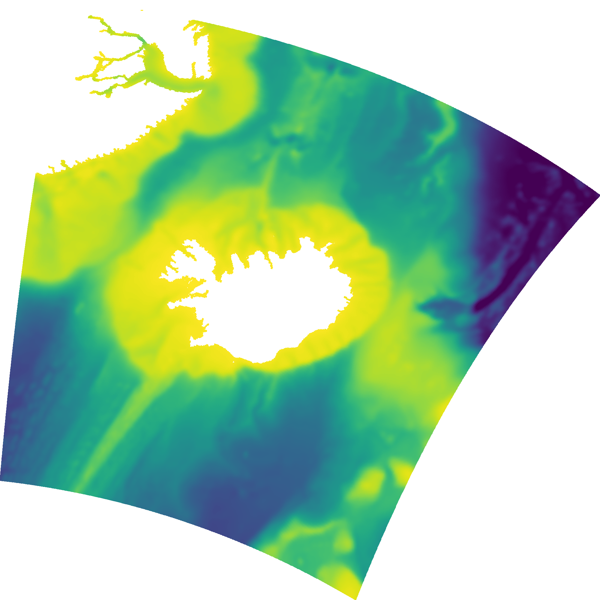
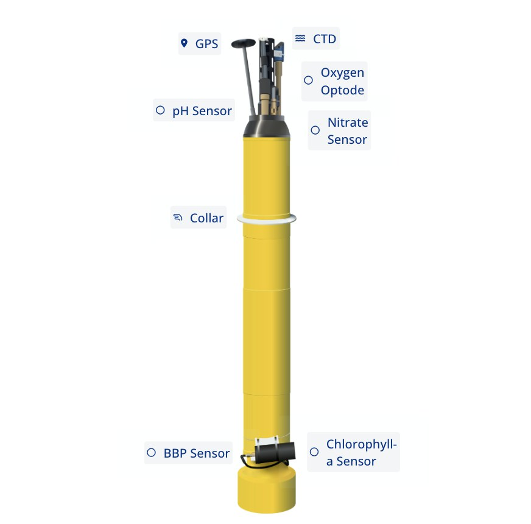
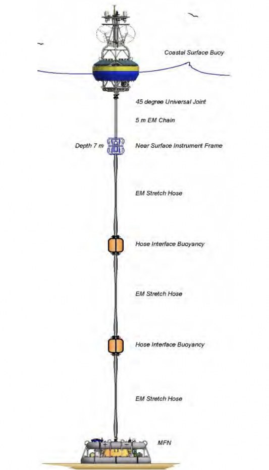
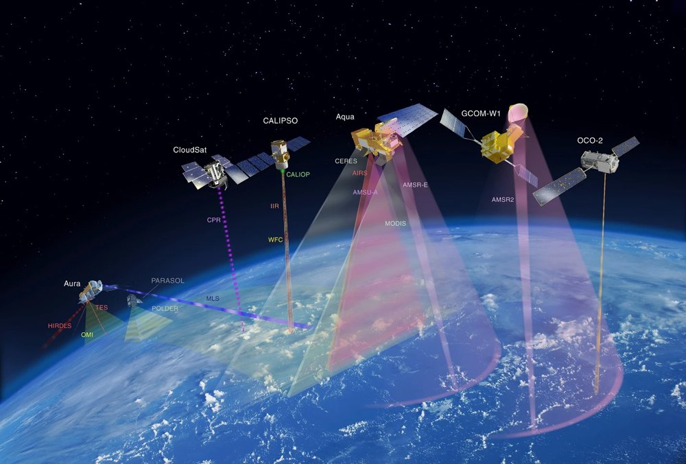

ROMS Modeling
A 2 km-resolution ROMS (Regional Ocean Modeling System) implementation of the seas around Iceland — the Iceland Sea, Denmark Strait and the Irminger Sea shelf — developed for physical oceanographic research and fisheries applications, with ongoing validation against independent observations.
Explore

ReadyAbout the Model
Domain, resolution, bathymetry and the institution behind the model.

ReadyROMS vs Argo Floats
36 colocated Argo floats: depth profiles, fixed-depth time series and Hovmöller sections compared against the model.
Data source: Argo Program (argo.ucsd.edu) ↗

ReadyROMS vs Moorings
7 station-deployments (ADCP currents, MicroCat temperature/salinity) from five mooring sites around Iceland, colocated with the model.
Data source: HAFRO / MFRI moorings (hafogvatn.is) ↗

ReadyROMS vs Satellite SST & SSS
Daily sea surface temperature and salinity maps against AVHRR and CMEMS satellite products — pick any date to compare.
Data source: NOAA AVHRR OISST & Copernicus Marine ↗
Model Domain in 3D
The model domain as an extracted slab: a ROMS sea surface temperature snapshot draped on top, a high-resolution coastline marking the shore, and the real seafloor relief exposed below — the Denmark Strait trench dropping away to the northwest, the Iceland–Faroe Ridge to the southeast. Drag to rotate, scroll to zoom.
Developed at
Contact
Model development & validation · Marine and Freshwater Research Institute (HAFRO)